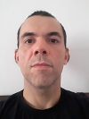

|  |
|
Naval Architect, structural engineer and enthusiast of Ocean Thermal Energy Conversion. Interests: research, development and innovation. Co-Founder of Labbry, the first latin american free innovation platform. This page was initiated in june 2020. |
| @GomesKlim | on Twitter. | @klimgom_ | on Instagram. |
Welcome to my personal page. Here you will find all stuff that I produce in my carrer as engineer and also in my personal life, like texts, videos and anything else. Follow the links and enjoy. I have created this site not only to share my professional experience. In the last years I have been producing content and I think this can be useful for someone. Also, sometimes I have ideas and would like to share with people outside from confusing social network. I really want people to find those ideas and I would like to talk about it. This is not made for human resources or headhunters, although they can make use of it if they want.
Braga, C.V., Gomes, R.K., A dessalinização térmica como alternativa para o abastecimento de água no Brasil, 2011.
Christianism, spiritism and all religions and ancestor cultures.
Philosophy, especially Socrates, Plato and stoicism.
Literature
Martial arts
| Research, development and innovation - Oslo Manual, Frascati Manual and other references. |
| Coding : python (intermediate level) and Java (basic level) |
| Structural Desing of offshore strucutres |
| Structural desing in general: AISC 1989 and 2005 |
| Classification rules for structural desing, especially DNV. |
| Analysis of subsea equipments installation DNV-RP-H103 |
| Project Management based on PMBOk or Scrum. |
| Contract management. |
| Patent research and writting. |
| Modeling in Blender (basic level) |
| Course | Institution | Year |
| Naval Architecture | Federal University of Rio de Janeiro | 2003 |
| Mechanical Engineering - Msc | Pontifícia Universidade Católica - RJ | 2011 |
| Master Business Administration in Project Management | Fundação Getúlio Vargas - FGV | 2011 |
| Ocean Engineering - Dsc - not finished yet | Federal University of Rio de Janeiro - Coppe | I hope to finish very soon. |
| Dates | Company | What I have learned in few words. |
|---|---|---|
| 2003 | Amerincan Bureau of Shipping - Group | I have worked as naval architect for the GIEN team in ABS Group Rio de Janeiro. I was initiated in Structural engineering, learning good reasoning, concepts and also to perform analysis in Finite Element softwares like FEMAP/Nastran. I had great teaches during this time and performed my first works on board of offshore platforms. |
| 2006 | Projemar S.A. | In Projemar I had the first contact with real engineering design. I was hired for the structural engineering team form for the global analysis of the FPSO P53 based on BV rules. I have performed also lifting analysis. This time I have learned to perform detailed drawing verification. |
| 2008 | Intec Worley Parsons | I have moved for subesea engineering in the Intec company, which was part of the Hereema group. In this company I had the first contact with dynamic analysis in Orcaflex and strucutral analysis in Ansys Workbench. The project was focused on installation desing of pipelines. |
| 2010 | Chemtec | During the time in Chemtech I have participated in a temporary contract for the selection of the new LNG terminal for Petrobras especially involved in criteria related to maneuverability of LNG carriers. |
| 2011 | Technip | Structural analysis, installation of subsea equipments and designing equipments for installation vessels. |
| 2012 | GDK | I have learned how to install the pipeline but this time I could touch the pipeline and see it entering the water for lowering and also about make a mistake and correct it. |
| 2014 | Projemar S.A. (again?) | This time I have lerned to desing a mooring balcony for a FPSO from scratch and also other relevant equipments. |
| 2015 | Unemployed | After leaving Projemar, as Cessao Onerosa project was ended, I have become unenmployed for some months. This was the result of socialism in Brazil... |
| 2015 | Ledav | During 2015 I have started the doctorate and was invited to work in the Laboratório de Análise de Vibração, with focus on ocean renewable energy concepts. |
| 2018 | Amazul - Brazilian Navy | I have proudly worked for brazilian navy in São Paulo and learned to manage contracts to build a Fuel Element Pool of a nuclear plant. |
| 2019 | Waves and Currents Laboratory (University) | I was back to Rio to finish the doctorate and I am still learning what is a hydrodynamic coefficient and how it impacts in the lowering of huge subsea equipments. It is really cool but not real life yet. |
Find my CV updated in portuguese.
This was the presentation for my first article submited to a journal. Here you find the references. Presentation to Ledav in 07/01/2020 - find the references for my article.
Calculate the lateral displacement of a lifted object subject to current according with DNV-RP-H103 python file
Kern method, very soon.
I have just started to learn latim. I'm going to share exercises from Napoleão Mendes de Almeida and other stuff. If you find anything wrong please let me know. Thanks. It is in portuguese.